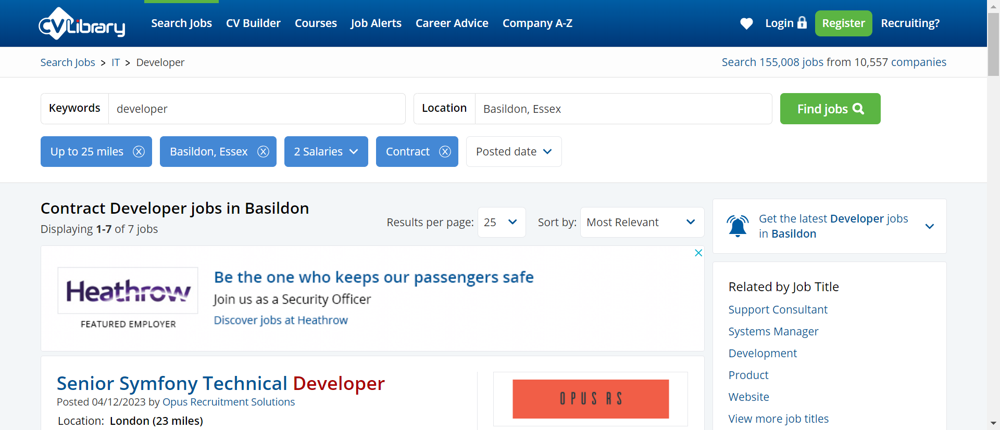
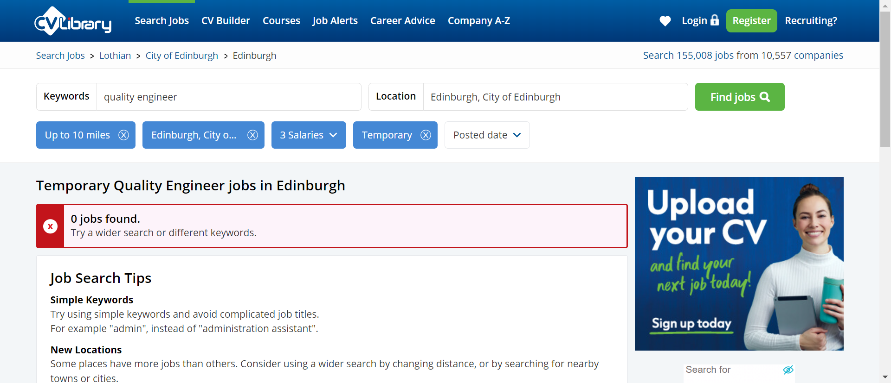

Started
Dec 22, 2023 01:26:53 am
Ended
Dec 22, 2023 01:28:38 am
Features Passed
0
Features Failed
1
Features
Scenarios
Steps
Timeline
Tags
| Name | Passed | Failed | Skipped | Others | Passed % |
|---|---|---|---|---|---|
| @smoke | 0 | 7 | 0 | 0 | 0% |
| @author_shraddha | 0 | 7 | 0 | 0 | 0% |
| @regression | 0 | 7 | 0 | 0 | 0% |
| @sanity | 0 | 7 | 0 | 0 | 0% |
System/Environment
| Name | Value |
|---|---|
| Engineer | shraddha |
| Project | cucumber- cv-library-uk |
| os | Windows |
-
CV library homepage
01:26:54 / 00:01:44:254 Fail
CV library homepage
12.22.2023 01:26:54 12.22.2023 01:28:38 00:01:44:254 · #test-id=1As a user, i would like to add job detailsFailVerify JobSearch Result Using Different Data SetFailVerify JobSearch Result Using Different Data SetGiven I am on HomePageWhen enter job title "Tester"Then enter Location "Harrow"And select distance "up to 5 miles"And click on moreSearchOptionsLinkStep skippedAnd enter salaryMin "30000"Step skippedAnd enter salaryMax "500000"Step skippedAnd select salaryType "Per annum"Step skippedAnd select jobType "Permanent"Step skippedAnd click on Find Jobs buttonStep skippedAnd verify the result "Permanent Tester jobs in Harrow on the Hill"Step skippeduk.co.library.steps.Hooks.tearDown(io.cucumber.java.Scenario)Verify JobSearch Result Using Different Data SetFailVerify JobSearch Result Using Different Data SetGiven I am on HomePageWhen enter job title "Developer"Then enter Location "Basildon"And select distance "25 miles"And click on moreSearchOptionsLinkAnd enter salaryMin "40000"And enter salaryMax "60000"And select salaryType "Per annum"And select jobType "Contract"And click on Find Jobs buttonAnd verify the result "Contract Developer jobs in Basildon"uk.co.library.steps.Hooks.tearDown(io.cucumber.java.Scenario)Verify JobSearch Result Using Different Data SetFailVerify JobSearch Result Using Different Data SetGiven I am on HomePageWhen enter job title "Quality Engineer"Then enter Location "Edinburgh, City of Edinburgh"And select distance "10 miles"And click on moreSearchOptionsLinkAnd enter salaryMin "40000"And enter salaryMax "70000"And select salaryType "Per annum"And select jobType "Temporary"And click on Find Jobs buttonAnd verify the result "Temporary Quality Engineer jobs in Edinburgh"uk.co.library.steps.Hooks.tearDown(io.cucumber.java.Scenario)Verify JobSearch Result Using Different Data SetFailVerify JobSearch Result Using Different Data SetGiven I am on HomePageWhen enter job title "Quality Assurance"Then enter Location "London"And select distance "35 miles"And click on moreSearchOptionsLinkAnd enter salaryMin "45000"And enter salaryMax "75000"And select salaryType "Per annum"And select jobType "Apprenticeship"And click on Find Jobs buttonAnd verify the result "Apprenticeship Quality Assurance jobs in London"uk.co.library.steps.Hooks.tearDown(io.cucumber.java.Scenario)FailVerify JobSearch Result Using Different Data SetGiven I am on HomePageWhen enter job title "Test Engineer"Then enter Location "Derby"And select distance "10 miles"And click on moreSearchOptionsLinkStep skippedAnd enter salaryMin "25000"Step skippedAnd enter salaryMax "45000"Step skippedAnd select salaryType "Per annum"Step skippedAnd select jobType "Part Time"Step skippedAnd click on Find Jobs buttonStep skippedAnd verify the result "Part Time Test Engineer jobs in Derby"Step skippeduk.co.library.steps.Hooks.tearDown(io.cucumber.java.Scenario)FailVerify JobSearch Result Using Different Data SetGiven I am on HomePageWhen enter job title "Test Analyst"Then enter Location "Edenbridge, Kent"Step skippedAnd select distance "25 miles"Step skippedAnd click on moreSearchOptionsLinkStep skippedAnd enter salaryMin "25000"Step skippedAnd enter salaryMax "45000"Step skippedAnd select salaryType "Per annum"Step skippedAnd select jobType "Permanent"Step skippedAnd click on Find Jobs buttonStep skippedAnd verify the result "Permanent Test Analyst jobs in Edenbridge"Step skippeduk.co.library.steps.Hooks.tearDown(io.cucumber.java.Scenario)FailVerify JobSearch Result Using Different Data SetGiven I am on HomePageWhen enter job title "Test Manager"Then enter Location "Hampshire"Step skippedAnd select distance "35 miles"Step skippedAnd click on moreSearchOptionsLinkStep skippedAnd enter salaryMin "35000"Step skippedAnd enter salaryMax "65000"Step skippedAnd select salaryType "Per annum"Step skippedAnd select jobType "Permanent"Step skippedAnd click on Find Jobs buttonStep skippedAnd verify the result "Permanent Test Manager jobs in Hampshire"Step skippeduk.co.library.steps.Hooks.tearDown(io.cucumber.java.Scenario)
-
@smoke
7 tests
@smoke
7 failedStatus Timestamp TestName Fail 01:26:54 am Verify JobSearch Result Using Different Data Set CV library homepage.Verify JobSearch Result Using Different Data SetFail 01:27:21 am Verify JobSearch Result Using Different Data Set CV library homepage.Verify JobSearch Result Using Different Data SetFail 01:27:48 am Verify JobSearch Result Using Different Data Set CV library homepage.Verify JobSearch Result Using Different Data SetFail 01:28:16 am Verify JobSearch Result Using Different Data Set CV library homepage.Verify JobSearch Result Using Different Data SetFail 01:28:27 am Verify JobSearch Result Using Different Data Set CV library homepage.Verify JobSearch Result Using Different Data SetFail 01:28:31 am Verify JobSearch Result Using Different Data Set CV library homepage.Verify JobSearch Result Using Different Data SetFail 01:28:34 am Verify JobSearch Result Using Different Data Set CV library homepage.Verify JobSearch Result Using Different Data Set -
@author_shraddha
7 tests
@author_shraddha
7 failedStatus Timestamp TestName Fail 01:26:54 am Verify JobSearch Result Using Different Data Set CV library homepage.Verify JobSearch Result Using Different Data SetFail 01:27:21 am Verify JobSearch Result Using Different Data Set CV library homepage.Verify JobSearch Result Using Different Data SetFail 01:27:48 am Verify JobSearch Result Using Different Data Set CV library homepage.Verify JobSearch Result Using Different Data SetFail 01:28:16 am Verify JobSearch Result Using Different Data Set CV library homepage.Verify JobSearch Result Using Different Data SetFail 01:28:27 am Verify JobSearch Result Using Different Data Set CV library homepage.Verify JobSearch Result Using Different Data SetFail 01:28:31 am Verify JobSearch Result Using Different Data Set CV library homepage.Verify JobSearch Result Using Different Data SetFail 01:28:34 am Verify JobSearch Result Using Different Data Set CV library homepage.Verify JobSearch Result Using Different Data Set -
@regression
7 tests
@regression
7 failedStatus Timestamp TestName Fail 01:26:54 am Verify JobSearch Result Using Different Data Set CV library homepage.Verify JobSearch Result Using Different Data SetFail 01:27:21 am Verify JobSearch Result Using Different Data Set CV library homepage.Verify JobSearch Result Using Different Data SetFail 01:27:48 am Verify JobSearch Result Using Different Data Set CV library homepage.Verify JobSearch Result Using Different Data SetFail 01:28:16 am Verify JobSearch Result Using Different Data Set CV library homepage.Verify JobSearch Result Using Different Data SetFail 01:28:27 am Verify JobSearch Result Using Different Data Set CV library homepage.Verify JobSearch Result Using Different Data SetFail 01:28:31 am Verify JobSearch Result Using Different Data Set CV library homepage.Verify JobSearch Result Using Different Data SetFail 01:28:34 am Verify JobSearch Result Using Different Data Set CV library homepage.Verify JobSearch Result Using Different Data Set -
@sanity
7 tests
@sanity
7 failedStatus Timestamp TestName Fail 01:26:54 am Verify JobSearch Result Using Different Data Set CV library homepage.Verify JobSearch Result Using Different Data SetFail 01:27:21 am Verify JobSearch Result Using Different Data Set CV library homepage.Verify JobSearch Result Using Different Data SetFail 01:27:48 am Verify JobSearch Result Using Different Data Set CV library homepage.Verify JobSearch Result Using Different Data SetFail 01:28:16 am Verify JobSearch Result Using Different Data Set CV library homepage.Verify JobSearch Result Using Different Data SetFail 01:28:27 am Verify JobSearch Result Using Different Data Set CV library homepage.Verify JobSearch Result Using Different Data SetFail 01:28:31 am Verify JobSearch Result Using Different Data Set CV library homepage.Verify JobSearch Result Using Different Data SetFail 01:28:34 am Verify JobSearch Result Using Different Data Set CV library homepage.Verify JobSearch Result Using Different Data Set
-
org.openqa.selenium.NoSuchElementException
4 tests
org.openqa.selenium.NoSuchElementException
4 failedStatus Timestamp TestName Fail 01:27:00 am And select distance "up to 5 miles" CV library homepage.Verify JobSearch Result Using Different Data Set.And select distance "up to 5 miles"Fail 01:27:27 am And verify the result "Contract Developer jobs in Basildon" CV library homepage.Verify JobSearch Result Using Different Data Set.And verify the result "Contract Developer jobs in Basildon"Fail 01:27:56 am And verify the result "Temporary Quality Engineer jobs in Edinburgh" CV library homepage.Verify JobSearch Result Using Different Data Set.And verify the result "Temporary Quality Engineer jobs in Edinburgh"Fail 01:28:23 am And verify the result "Apprenticeship Quality Assurance jobs in London" CV library homepage.Verify JobSearch Result Using Different Data Set.And verify the result "Apprenticeship Quality Assurance jobs in London" -
org.openqa.selenium.NoSuchWindowException
6 tests
org.openqa.selenium.NoSuchWindowException
6 failedStatus Timestamp TestName Fail 01:28:27 am uk.co.library.steps.Hooks.tearDown(io.cucumber.java.Scenario) CV library homepage.Verify JobSearch Result Using Different Data Set.uk.co.library.steps.Hooks.tearDown(io.cucumber.java.Scenario)Fail 01:28:31 am uk.co.library.steps.Hooks.tearDown(io.cucumber.java.Scenario) CV library homepage.Verify JobSearch Result Using Different Data Set.uk.co.library.steps.Hooks.tearDown(io.cucumber.java.Scenario)Fail 01:28:34 am When enter job title "Test Analyst" CV library homepage.Verify JobSearch Result Using Different Data Set.When enter job title "Test Analyst"Fail 01:28:34 am uk.co.library.steps.Hooks.tearDown(io.cucumber.java.Scenario) CV library homepage.Verify JobSearch Result Using Different Data Set.uk.co.library.steps.Hooks.tearDown(io.cucumber.java.Scenario)Fail 01:28:38 am When enter job title "Test Manager" CV library homepage.Verify JobSearch Result Using Different Data Set.When enter job title "Test Manager"Fail 01:28:38 am uk.co.library.steps.Hooks.tearDown(io.cucumber.java.Scenario) CV library homepage.Verify JobSearch Result Using Different Data Set.uk.co.library.steps.Hooks.tearDown(io.cucumber.java.Scenario) -
org.openqa.selenium.support.ui.UnexpectedTagNameException
1 tests
org.openqa.selenium.support.ui.UnexpectedTagNameException
1 failedStatus Timestamp TestName Fail 01:28:31 am And select distance "10 miles" CV library homepage.Verify JobSearch Result Using Different Data Set.And select distance "10 miles"